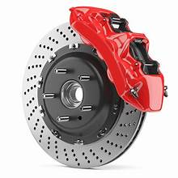

객체지향 상속의 개념
당신이 자동차를 만들고 있다고 치자.
car1:

car2:
class car1, class car2에는 Move(), Brake() 함수가 있다.
이제 이 두 함수를 실행시킬 브레이크와 엑셀을 만들면 되는데...
brake:

class brake에서 car1, car2의 함수를 실행시켜 주고 싶은데 문제가 발생했다.
바로 car1, car2를 따로 가져야 한다는 것이다.
'그게 뭐 대수인가?' 라고 생각할 수 있지만,
자동차의 종류가 200종류, 300종류로 늘어난다고 생각해봐라.
브레이크랑 엑셀 하나 만드는데 매번 200종류의 클래스를 인수로 가지고, 어떤 인수가 채워져 있는지 매번 확인해줘야 한다.
그래서 우리는 상속을 쓴다.
class car에 virtual void Brake(), virtual void Move()가 있고,
car1, car2가 car를 상속한다고 하면,
Brake는 car를 인수로 가지고 car의 Brake, Move를 실행시켜 주면 된다.
car가 들어갈 자리엔, car를 상속받은 것들이 들어갈 수 있기 때문이다.
그런데 이러면 결국 car1, car2는 같은 기능만 가질 수 있는 게 아닌가? 싶을 거다.
아니다. 함수를 '재정의'해, car의 함수의 내용을 car1, car2가 바꿔버릴 수 있다.
car1에서 override void Brake()를 정의하면, car1이 상속한 car의 Brake()의 내용이 car1에서 정의된 Brake()의 내용으로 바뀐다.
마찬가지로 car2도 자신이 상속한 car의 함수의 내용을 바꿔줄 수 있다.
이러면 Brake는 car의 함수를 실행시키지만, 실질적으로 car1, car2의 고유한 기능을 실행시킬 수 있는 것이다.